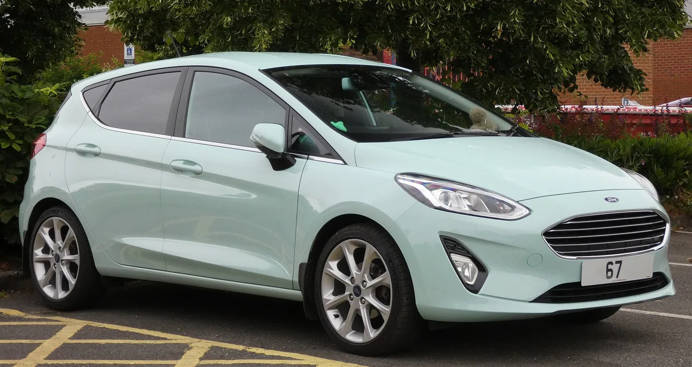
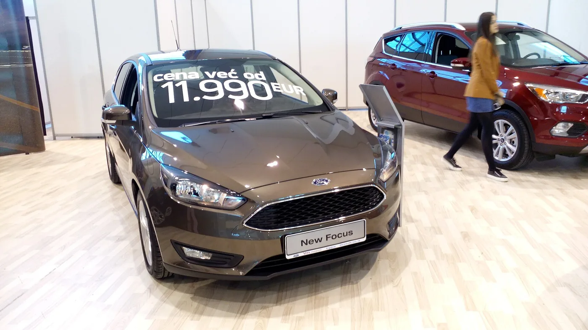
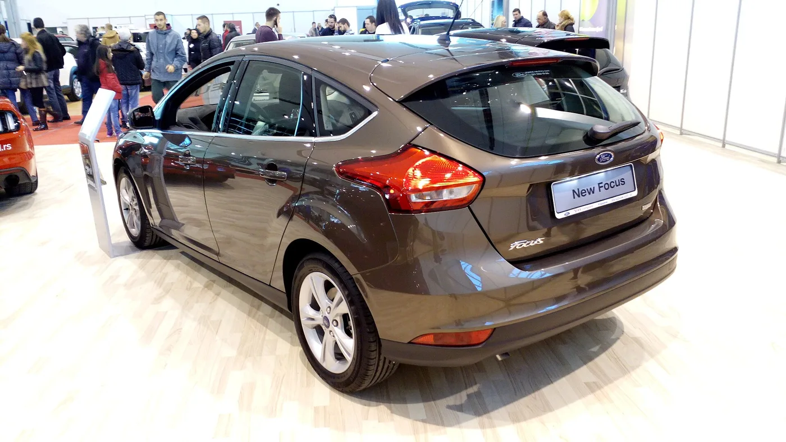

▲ 포드 에코스포츠 1.0 에코부스트. 2018~2021년식이 이번 조사 대상에 포함됐다 ⓒ Ethan Llamas, Wikimedia Commons (CC BY-SA 4.0)
미 도로교통안전국(NHTSA)이 포드 1.0 에코부스트 엔진 조사를 엔지니어링 분석 단계로 격상했습니다. 사건번호는 EA26004입니다.
대상은 13만 5,551대입니다. 문제의 핵심은 오일 속에 잠긴 타이밍 벨트입니다.
접수된 사례는 355건. 평균 고장 시점은 7만 마일(약 11만 km)입니다. 그런데 아직 정식 리콜은 나오지 않았습니다.
1. 오일 속에 벨트를 담근 설계
일반적인 엔진은 타이밍을 체인이나 건식 벨트로 맞춥니다. 1.0 에코부스트는 다릅니다. 타이밍 벨트를 엔진 오일 속에 잠기게 설계했습니다. 이른바 습식 벨트(wet belt)입니다.
이유는 소음입니다. 체인은 마찰음이 나고, 건식 벨트도 구동음이 있습니다. 오일에 담그면 훨씬 조용해집니다. 3기통 특유의 진동과 소음을 잡아야 했던 소형 엔진에는 매력적인 선택이었습니다.
문제는 벨트가 결국 마모된다는 것입니다. 그리고 이 벨트는 오일 속에 있습니다.
마모로 떨어져 나온 고무 부스러기가 오일에 섞입니다. 그 오일은 순환하면서 오일펌프의 메시 스크린을 통과해야 합니다.
부스러기가 스크린을 막으면 유압이 떨어집니다. 유압이 떨어지면 베어링과 회전부에 유막이 형성되지 않습니다. 그다음은 엔진 소착입니다.
즉 소모품 하나가 수명을 다하면 엔진 전체가 죽는 구조입니다. 일반적인 벨트 교체와 성격이 완전히 다릅니다.
2. 평균 7만 마일이라는 숫자가 무서운 이유
NHTSA에 접수된 사례는 355건입니다. 주행 중 동력이 끊기거나 오일 부족 경고가 뜬 뒤 엔진이 망가진 경우들입니다.
수치에서 눈여겨볼 대목은 발생 시점의 분포입니다.
- 98%가 15만 마일(약 24만 km) 이전에 발생
- 평균은 7만 마일(약 11만 km)
7만 마일은 차가 낡아서 죽는 거리가 아닙니다. 국내 기준으로 보면 연 1만 5,000km를 타는 차가 7~8년째에 도달하는 지점입니다.
보증은 대부분 끝나 있고, 차는 아직 멀쩡한 나이입니다. 소유자 입장에서는 가장 억울한 구간입니다.
부상이나 사망 보고는 아직 없습니다. 다만 NHTSA가 문제 삼는 지점은 주행 중 동력 상실입니다. 고속도로 한가운데서 엔진이 멈추면 그 자체가 사고 요인이 됩니다.

▲ 포드 피에스타 1.0 에코부스트. 이번 조사에서 피에스타는 2014~2017년식이 대상이다
3. "조사 격상"은 무슨 뜻인가
많은 기사에서 "엔지니어링 분석으로 격상"이라고만 쓰지만, 이 단계 구분은 실제로 중요합니다.
NHTSA의 결함 조사는 대체로 이렇게 진행됩니다.
| 단계 | 내용 |
|---|---|
| 예비 평가(PE) | 민원이 모이면 문제가 실재하는지 우선 확인 |
| 엔지니어링 분석(EA) | 결함의 범위와 원인을 정밀 분석 — 현재 단계 |
| 리콜 요구 / 자발적 리콜 | 결함 인정 시 제조사가 무상 수리 시행 |
EA로 올라갔다는 것은 "민원 수준을 넘어섰다"는 판단이 섰다는 뜻입니다. 리콜로 이어지는 사례가 적지 않습니다.
다만 EA가 자동으로 리콜이 되는 것은 아닙니다. 여기서 몇 달에서 몇 년이 걸리기도 하고, 결함 미인정으로 종결되기도 합니다.
현재 포드는 정식 안전 리콜을 시행하지 않았습니다.
4. 11.1시간 — 소유자가 떠안는 금액
포드가 내놓은 조치는 고객 만족 프로그램입니다. 벨트 교체 권장 주기를 10만 마일로 단축했습니다.
문제는 평균 고장 시점이 7만 마일이라는 점입니다. 원문은 이를 두고 "3만 마일 늦었다"고 지적했습니다. 권장 주기가 도래하기 전에 이미 상당수가 망가진다는 뜻입니다.
비용도 만만치 않습니다. 피에스타 기준 타이밍 벨트 교체는 공임만 11.1시간이 잡힙니다. 부품값과 별개입니다.
습식 벨트는 오일팬을 내리고 접근해야 하는 구조라 작업 시간이 깁니다. 소형차 소유자 입장에서는 차 값 대비 부담이 큰 정비입니다.
그리고 정식 리콜이 아니므로 보상 경로가 보장되지 않습니다. 자비로 미리 교체했다가 나중에 리콜이 나와도, 소급 환급이 자동으로 되는 것은 아닙니다.
참고로 해당 모델들의 JD파워 신뢰도 평가는 100점 만점에 64~77점 구간으로, 저가 소형차 중에서도 평균 이하로 분류됩니다.

▲ 포드 포커스 Mk3 페이스리프트. 포커스는 2015~2018년식이 조사 대상이다 ⓒ KGC626, Wikimedia Commons (CC BY-SA 4.0)
5. 국내 운전자가 알아둘 것 — 이건 포드만의 구조가 아니다

▲ 포드 포커스 Mk3 페이스리프트 후면. 습식 벨트는 포드만 쓰는 설계가 아니다 ⓒ KGC626, Wikimedia Commons (CC BY-SA 4.0)
피에스타·포커스·에코스포츠는 국내에서 널리 팔린 차가 아닙니다. 이번 조사가 국내 소유자에게 직접 영향을 주는 범위는 제한적입니다.
그런데 습식 타이밍 벨트 자체는 포드만 쓰는 설계가 아닙니다. 소음과 마찰 저감을 노린 다운사이징 엔진에서 여러 제조사가 채택해 왔습니다.
대표적으로 스텔란티스 계열의 1.2 퓨어테크 3기통이 같은 방식을 씁니다. 이 엔진은 국내에도 푸조·시트로엥 소형 모델로 들어와 있습니다.
따라서 내 차가 습식 벨트인지 아는 것이 먼저입니다. 확인 방법은 단순합니다.
- 정비 매뉴얼에서 타이밍 구동 방식 확인 — 체인인지, 건식 벨트인지, 오일 침지식인지
- 교체 주기가 명시돼 있는지 — 체인은 보통 무교체, 벨트는 주기가 있다
- 엔진오일 교환 시 오일 상태 확인 — 미세한 고무 슬러지가 보이면 즉시 점검
- 유압 경고등을 절대 무시하지 않기 — 이 구조에서 유압 경고는 마지막 신호에 가깝다
습식 벨트 엔진에서 오일 교환 주기를 늘리는 것은 특히 위험합니다. 벨트가 오일에 잠겨 있으므로, 오일 열화가 벨트 수명을 직접 갉아먹습니다.
6. 정리
NHTSA가 포드 1.0 에코부스트 조사를 엔지니어링 분석(EA26004)으로 격상했습니다. 대상은 피에스타(2014~2017), 포커스(2015~2018), 에코스포츠(2018~2021) 13만 5,551대입니다.
오일에 잠긴 습식 타이밍 벨트가 마모되며 부스러기가 오일펌프 스크린을 막아 엔진이 소착되는 구조입니다. 355건이 접수됐고, 98%가 15만 마일 이전, 평균 7만 마일에서 발생했습니다.
포드는 교체 주기를 10만 마일로 단축했을 뿐 정식 리콜은 하지 않았습니다. 피에스타 기준 공임만 11.1시간이 드는 정비입니다.